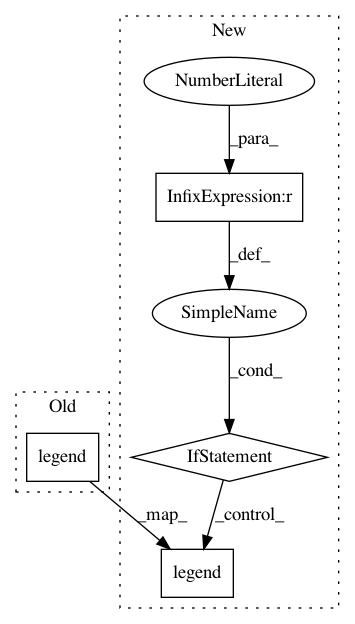

8ae527b26368f10e14792fd176b39815675501c8,scanpy/plotting/tools.py,,aga_path,#Any#Any#Any#Any#Any#Any#Any#Any#Any#Any#Any#Any#Any#Any#Any#Any#Any#Any#,923
Before Change
pl.subplots_adjust(left=left_margin)
else:
left_margin = 0.4 if left_margin is None else left_margin
pl.legend(frameon=False, loc="center left",
bbox_to_anchor=(-left_margin, 0.5),
fontsize=legend_fontsize)
ax.set_xticks(x_tick_locs)
ax.set_xticklabels(x_tick_labels)
ax.set_xlabel(adata.add["aga_groups_original"] if ("aga_groups_original" in adata.add
and adata.add["aga_groups_original"] != "louvain_groups")
After Change
pl.subplots_adjust(left=left_margin)
else:
left_margin = 0.4 if left_margin is None else left_margin
if len(keys) > 1:
pl.legend(frameon=False, loc="center left",
bbox_to_anchor=(-left_margin, 0.5),
fontsize=legend_fontsize)
ax.set_xticks(x_tick_locs)
ax.set_xticklabels(x_tick_labels)
xlabel = (adata.add["aga_groups_original"] if ("aga_groups_original" in adata.add
and adata.add["aga_groups_original"] != "louvain_groups")
In pattern: SUPERPATTERN
Frequency: 4
Non-data size: 4
Instances
Project Name: theislab/scanpy
Commit Name: 8ae527b26368f10e14792fd176b39815675501c8
Time: 2017-09-18
Author: f.alex.wolf@gmx.de
File Name: scanpy/plotting/tools.py
Class Name:
Method Name: aga_path
Project Name: theislab/scanpy
Commit Name: 38ad6b4e89c7d1c7599c3b07ba5938d0f87904ab
Time: 2018-03-20
Author: f.alex.wolf@gmx.de
File Name: scanpy/plotting/preprocessing.py
Class Name:
Method Name: filter_genes_dispersion
Project Name: scikit-optimize/scikit-optimize
Commit Name: a99564aa688e14ccee5f09eceb6ecc0fd28813d9
Time: 2016-04-19
Author: manojkumarsivaraj334@gmail.com
File Name: examples/plot_gp_minimize_1d.py
Class Name:
Method Name:
Project Name: ultralytics/yolov3
Commit Name: 34bc12d2ad1e1b9ff8ece97ae771b25886c0ecb0
Time: 2018-11-11
Author: glenn.jocher@ultralytics.com
File Name: utils/utils.py
Class Name:
Method Name: plot_results